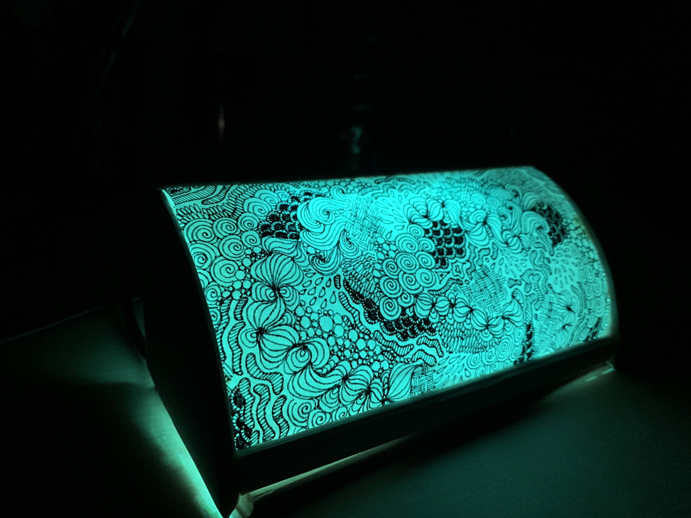
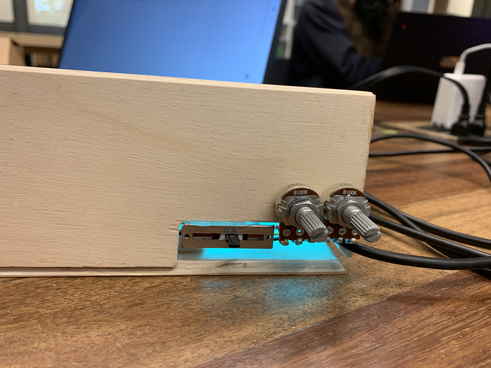

Using physical computing and the Arduino IDE, I created a color changing lamp with different modes. The lamp is meant to be aestheitcally pleasing and playful.
Color-changing Lamp
This project is meant to demonstrate the use of analog inputs that translate to a digital output. In this case, the user can turn two knobs on the outside of the lamp: one to change the modes (between continuous color cycling or choosing a static color) and one to choose the color should they choose to have a static color. I liked the idea of colored lights as the output, but found that the light from the LED strip was too harsh. I was inspired by paper lanterns that are often used as dectoration, and thought that paper would be a great way to diffuse the light. Additionally, I didn't want a simple rectanglar or cubical lamp, so I designed a cash-register-like shape and hand made the frame for the lamp in the wood shop to be the exact size of the breadboard that housed the Arduino. This project was a test of my aestheic design skills, but more so my physical computing skills as I struggled with some hardware aspects of the piece. I found that due to my extensive experience in C++, coding in the Arduino IDE was a pleasant experience and challenged me to think about coding in a new way that extended beyond the typical use of C++ coding.
 